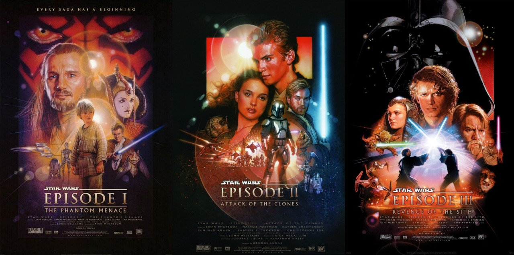

La deuxième trilogie de Star Wars ou prélogie est une série de trois films de la saga Star Wars créée par George Lucas, sortis entre 1999 et 2005.
Cette trilogie est composée des épisodes :
| Numéro | Nom | Date |
|---|---|---|
| I | La Menace Fantôme | 1999 |
| II | L'attaque des clones | 2002 |
| III | La revanche des Siths | 2005 |